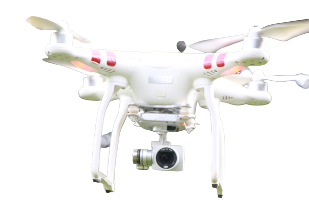

We provide drone solution to construction companies through a digital twin for monitoring and tracking of work, accurate messurements of areas, volumes, stokpiles and distances. Our specialized services help you save time, reduce cost, improve safety and communication.